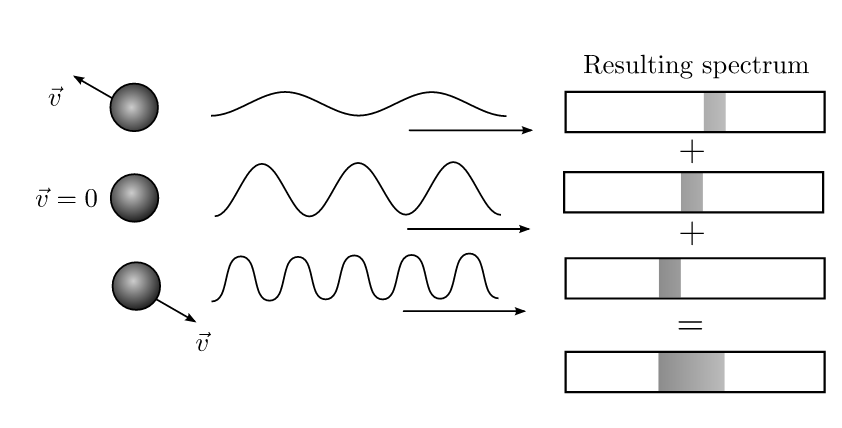

Forrige side🙂 🙁Bredden til spektrallinjer
Vi får dermed en bredde på linja, og ikke en syltynn spektrallinje på nøyaktig bølgelengden λ0: 
Men hvor bred blir linja og hva avgjør det? Og hva blir formen på linja? Kan du allerede tenke deg hvilken egenskap ved gassen som avgjør hvor bred linja blir?? Neste side